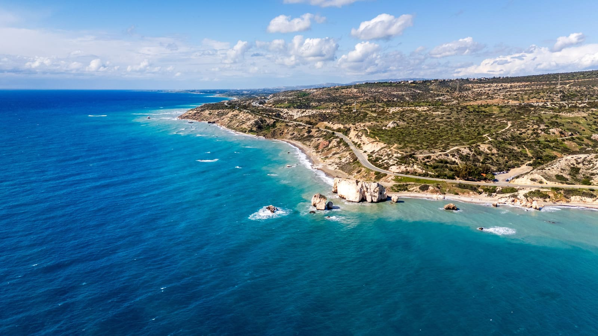

- Start
- Reiseziele
- Zypern
Reiseziel · Östliches Mittelmeer
Zypern Pauschalreise: Badeurlaub bis in den November
Eine der längsten Badesaisons im Mittelmeer, Euro statt Umtausch-Stress und faire Preise abseits der Ferien: Eine Zypern-Pauschalreise ist die entspannte Alternative zu den Klassikern. Hier erfährst du, welche Ecke der Insel zu dir passt, wann du am günstigsten fliegst – und welcher 4★-Deal gerade mit −54 % im Kanal liegt.

*Richtwert für Pauschalreisen mit Flug je nach Saison und Abflughafen – tagesaktuelle Preise im Vergleich.
Zypern ist die drittgrößte Insel im Mittelmeer – und die mit dem längsten Sommer. Während auf Mallorca im Oktober schon die Strandkörbe eingesammelt werden, badest du hier noch bis in den November bei 22 Grad Wassertemperatur. Dazu kommen 3.000 Sonnenstunden im Jahr, EU-Standard bei Einreise und Währung und eine überraschend abwechslungsreiche Insel: Partystrand und Klosterberg liegen kaum eine Autostunde auseinander. Die wichtigste Entscheidung für deine Zypern-Pauschalreise ist deshalb die Region.
Welche Region auf Zypern passt zu dir?
Ayia Napa & Protaras: die schönsten Sandstrände
Der Südosten ist die Badewanne der Insel – hier liegen die Strände, für die Zypern berühmt ist: der Nissi Beach mit seiner vorgelagerten Insel und karibisch hellem Sand, die Fig Tree Bay in Protaras und der ruhigere Makronissos Beach. Ayia Napa hat sein Party-Image der 2000er längst um Familienhotels und eine schicke Marina ergänzt, Protaras ist von Haus aus die entspanntere Familienversion. Wer wegen des Meeres nach Zypern fliegt, ist hier richtig – unser aktueller Deal unten liegt keine 100 Meter vom Sandstrand entfernt.
Paphos: Kultur und Sonnenuntergänge im Westen
Paphos im Westen ist das Kontrastprogramm: UNESCO-Welterbe mit antiken Mosaiken und Königsgräbern, eine hübsche Hafenpromenade und die Felsen von Petra tou Romiou, wo der Sage nach Aphrodite dem Meer entstieg. Die Strände sind hier eher Kies und dunkler Sand, dafür ist die Gegend ruhiger und bei Paaren ab 40 die beliebteste Ecke der Insel. Praktisch: Paphos hat einen eigenen Flughafen mit Direktverbindungen aus Deutschland.
Limassol: Stadt und Strand kombiniert
Limassol ist die lebendigste Stadt der Insel – Uferpromenade, Altstadt mit Burg, moderne Marina und dazu kilometerlange Stadtstrände. Wer im Urlaub abends echtes Stadtleben statt Hotelbar will und tagsüber trotzdem am Meer liegen möchte, bekommt hier die beste Mischung. Auch als Basis für Ausflüge ist Limassol ideal, weil es zentral an der Südküste liegt.
Larnaka: entspannt und nah am Flughafen
Larnaka wird oft unterschätzt: Die palmengesäumte Finikoudes-Promenade, der Salzsee mit Flamingos im Winter und kurze Transferwege – vom Flughafen bist du in 15 Minuten im Hotel. Die Preise liegen hier meist unter denen von Ayia Napa, das Publikum ist gemischt und entspannt. Gute Wahl für alle, die unkompliziert ankommen und keinen Bilderbuch-Strand direkt vor der Tür brauchen.
Troodos-Gebirge: der Ausflug ins grüne Zypern
Egal wo du wohnst – einen Tag solltest du dem Troodos-Gebirge schenken. Fast 2.000 Meter hoch, mit Bergdörfern wie Omodos, byzantinischen Scheunendach-Kirchen (UNESCO) und Weingütern, die seit Jahrhunderten den süßen Commandaria keltern. Im Hochsommer ist es hier angenehm kühl, und du siehst das Zypern, das am Strand nicht vorkommt. Mit Mietwagen oder gebuchtem Ausflug gut machbar – beachte nur den Linksverkehr.
Die besten Zypern-Deals landen zuerst im Kanal.Kostenlos · kein Spam · jederzeit raus
Kanal beitretenBeste Reisezeit für Zypern
Zypern hat eine der längsten Badesaisons Europas: Von April bis November ist verlässlich Sommer, und das Meer bleibt dank der östlichen Mittelmeerlage bis weit in den Herbst warm. Im Hochsommer wird es mit bis zu 34 Grad richtig heiß – wer Hitze schlecht verträgt, weicht auf Mai, Juni oder den goldenen Oktober aus. Preislich sind Frühjahr und Spätherbst ohnehin die klügeren Monate.
| Monat | Luft | Wasser | Sonnenstunden | Fazit |
|---|---|---|---|---|
| April | 24 °C | 18 °C | 9 | Frühlingsstart, günstige Preise |
| Juni | 31 °C | 24 °C | 12 | Hochsommer vor den Ferien |
| August | 34 °C | 28 °C | 12 | Sehr heiß, Ferienpreise |
| September | 31 °C | 27 °C | 10 | Badewannen-Meer, wird günstiger |
| Oktober | 28 °C | 25 °C | 9 | Preis-Tipp |
| November | 24 °C | 22 °C | 7 | Badeurlaub, wenn andere heizen |
Alle Werte sind ca.-Angaben für die Südküste. Auffällig ist der Herbst: Im Oktober hat das Wasser noch 25 Grad – mehr als die Adria im Hochsommer – und selbst im November badest du bei 22 Grad Wassertemperatur. Genau in diese Lücke fallen die besten Zypern-Deals des Jahres, denn die Hotels sind offen, die Preise aber schon im Winter-Modus.
Preise & Spartipps: Was Zypern kosten darf
Als Richtwert je nach Saison und Abflughafen: 7 Nächte im 4★-Hotel mit Halbpension und Flug kosten meist 600–900 € pro Person. Im April/Mai und ab Mitte Oktober rutschen gute Häuser oft ans untere Ende dieser Spanne, im Juli und August liegt Zypern eher darüber – dann konkurriert die Insel mit ganz Europa um die Ferienplätze. Geprüfte Deals unterbieten die Spannen teils deutlich: Unser aktueller 4★-Deal unten kostet 664 € für 5 Nächte direkt am Sandstrand.
- Spätherbst statt Hochsommer buchen: Ende Oktober und November bekommst du Badewetter zu Nebensaison-Preisen – oft 30–40 % unter den Sommerpreisen desselben Hotels.
- Larnaka als Preisbremse prüfen: Hotels rund um Larnaka sind meist günstiger als in Ayia Napa – und der Transfer vom Flughafen dauert nur Minuten.
- Beide Flughäfen vergleichen: Larnaka (Osten) und Paphos (Westen) werden aus Deutschland direkt angeflogen – je nach Woche ist mal der eine, mal der andere deutlich billiger.
- Ferienzeiten früh sichern, Rest auf Deals warten: Wann welche Strategie gewinnt, erklärt unser Vergleich Frühbucher oder Last Minute.
- Mietwagen nur tageweise nehmen: Für Troodos & Co. reichen 2–3 Miettage – vorab online verglichen (Mietwagen-Vergleich) und ans Fahren im Linksverkehr denken.
Direkt aus dem Kanal
Aktueller Zypern-Deal aus dem Kanal
Geprüft am 30. Juli 2026: 4★ Asterias Beach Hotel in Ayia Napa (8,7/10 bei 885 Bewertungen) – 5 Nächte im Doppelzimmer mit Frühstück, unter 100 m zum Sandstrand, Beispieltermin 19.–24.11.2026 ab Berlin.

Den Buchungs-Link zu diesem Deal gibt es im WhatsApp-Kanal – dort posten wir ihn zusammen mit allen Details, solange das Kontingent verfügbar ist. Und der Termin ist kein Zufall: Mitte November badest du in Ayia Napa noch bei rund 22 Grad Wassertemperatur, zahlst aber Nebensaison-Preise.
Selbst vergleichen
Zypern-Pauschalreise zum Bestpreis
Abflughafen, Zeitraum und Verpflegung eingeben – der Rechner vergleicht die Zypern-Angebote der großen Veranstalter tagesaktuell.
Häufige Fragen zu Zypern
Wo sind die schönsten Strände auf Zypern?
Die berühmtesten Sandstrände liegen im Osten zwischen Ayia Napa und Protaras: der Nissi Beach mit seiner vorgelagerten Insel, die Fig Tree Bay und der Makronissos Beach – hell, flach abfallend und mit türkisblauem Wasser. Rund um Paphos und Limassol sind die Strände eher dunkler Sand oder Kies, dafür ist es dort spürbar ruhiger.
Bis wann kann man auf Zypern baden?
Locker bis Anfang November. Das Mittelmeer speichert die Sommerwärme hier besonders lange: Im Oktober hat das Wasser noch rund 25 Grad, im November etwa 22 Grad. Zusammen mit Lufttemperaturen um 24 Grad ist der Spätherbst auf Zypern ein Geheimtipp für günstigen Badeurlaub – unser aktueller Deal liegt nicht zufällig im November.
Zahlt man auf Zypern mit Euro?
Ja. Die Republik Zypern ist EU-Mitglied und hat seit 2008 den Euro – Geld tauschen entfällt, Kartenzahlung ist überall üblich. Für die Einreise reicht der Personalausweis. Nur im türkisch kontrollierten Norden der Insel wird mit türkischer Lira gezahlt.
Nord- und Südzypern – was muss ich wissen?
Die Insel ist seit 1974 geteilt. Pauschalreisen deutscher Veranstalter führen in die Republik Zypern im Süden – EU-Gebiet mit Euro, dazu gehören alle hier genannten Orte von Ayia Napa bis Paphos. Ein Tagesausflug in den Norden ist über offizielle Übergänge wie in Nikosia mit Personalausweis oder Reisepass problemlos möglich. Für deinen Badeurlaub spielt die Teilung sonst keine Rolle.
Wie lange fliegt man nach Zypern?
Ab Deutschland dauert der Direktflug je nach Abflughafen rund 3,5 bis 4 Stunden. Ziel ist meist Larnaka (LCA) im Südosten – ideal für Ayia Napa und Protaras – oder Paphos (PFO) im Westen. Die Uhr stellst du eine Stunde vor.
Weiterlesen
Kreta
Griechenlands größte Insel: Traumstrände wie Elafonissi, Tavernen-Kultur und kurze Flugzeit.
Zum Reiseguide ReisezielMalta & Gozo
Kleine Inseln, großes Programm: Kultur, Tauchen und milde Winter – nur 2,5 Flugstunden entfernt.
Zum Reiseguide RatgeberBeste Reisezeit: Wann wohin?
Der Monats-Kalender: welches Ziel wann Wetter und Preis am besten kombiniert.
Zum RatgeberLange Saison, kurze Deals
Zypern-Deals zuerst im Kanal
Gute Zypern-Deals wie der 664-€-Knaller oben sind oft nach wenigen Stunden vergriffen. Im WhatsApp-Kanal bekommst du sie, sobald wir sie geprüft haben – kostenlos und ohne Spam.